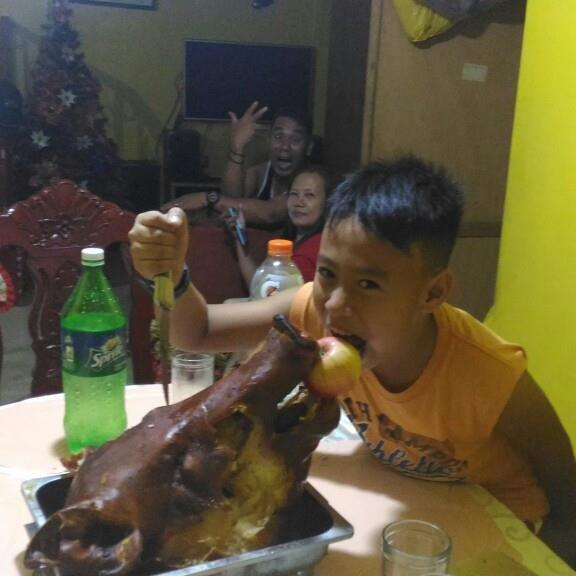

Player One: My Journey

Childhood Years
I was born in Santa Maria, Bulacan, a place I only knew briefly.[1] I was raised in San Jose Del Monte, Bulacan, where most of my childhood memories were formed.[2] I lived with my family, which was always full of people and activity.[3] My family consists of my father, mother, brother, sister, and grandmother, who were all part of my daily life.[4] I also grew up close to my uncle and auntie, even though they did not live in the same house.[5] My father worked as a seaman, so he was not always home because of his long trips abroad.[6] Every time he came home, it felt exciting and special for all of us.[7] My mother was a housewife who took care of me and my siblings every day.[8] She made sure we were fed, disciplined, and guided as we grew up.[9] My grandmother also helped my mother in raising us, especially when my father was away.[10] At an early age, I became familiar with using a computer because I often saw my older brother playing with his laptop.[11] Watching him made me curious, so I eventually learned how to use it too.[12] Because of that, I spent a lot of my time playing computer games during my free time.[13] Aside from playing, I also studied and tried to do well in school.[14] I also played outside, especially basketball, which was a favorite activity among my friends.[15] I felt like I lived a simple, fun, and happy childhood.[16] That childhood shaped many of my interests today.[17] Those interests eventually influenced my college course.[18] My childhood in Bulacan gave me many valuable memories.[19] It will always be a big part of who I am.[20]
↑ Back to Top
Teenage Years
During my teenage years, I studied at Jarmmeth Academy up until Grade 10.[1] Those years became a big part of who I am today.[2] When I reached senior high school, I eventually transferred to First City Providential College.[3] Adjusting to a new school was scary at first.[4] I slowly learned to adapt to the new environment.[5] One of my biggest challenges was choosing the right friends.[6] I experienced being in toxic friendship circles.[7] Some groups were fun and lively.[8] Others made me feel confused and stressed.[9] Despite that, I learned important lessons about trust.[10] I also learned how to set boundaries.[11] My hobbies still included playing online computer games.[12] I also played basketball with friends whenever we had free time.[13] Sometimes we set up chairs outside a friend’s house to chill.[14] We also traveled to nearby places just to relax.[15] As teenagers, we had limited freedom.[16] These years were when I met my first girlfriend.[17] It was a mix of excitement and nervousness.[18] I experienced my first heartbreak and rejection.[19] Those moments helped me grow emotionally.[20]
↑ Back to TopCollege Years
I took Computer Science in college because I was interested in technology.[1] My first year felt manageable and welcoming.[2] The environment helped me adjust easily.[3] I met my first college friend.[4] I also met many students from different places.[5] Each person had their own story.[6] I learned a lot from listening to them.[7] One memorable part of my first year was our NSTP subject.[8] We visited a place in Manila.[9] We distributed relief goods to people in need.[10] It was a meaningful experience.[11] That activity taught me the value of community service.[12] Commuting to school was tiring.[13] It took nearly three hours both ways.[14] I eventually grew used to the long travel.[15] Looking out the bus window became part of my routine.[16] It gave me time to think.[17] I felt proud of managing my responsibilities.[18] My independence improved during my first year.[19] It was a meaningful start to my college journey as a Computer Science student.[20]
↑ Back to Top